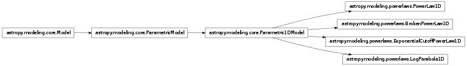

Models And Fitting (astropy.modeling)¶
Introduction¶
modeling provides a framework for representing models and performing model evaluation and fitting. It supports 1D and 2D models and fitting with parameter constraints.
It is designed to be easily extensible and flexible. Models do not reference fitting algorithms explicitly (though exceptions are sometimes necessary) and new fitting algorithms may be added without changing the existing models. In addition models can be combined in different ways using a machinery that allows assigning outputs from one model into the appropriate input of another in a flexible way, LabeledInput. The goal is to eventually provide a rich toolset of models and fitters such that most users will not need to define new model classes, nor special purpose fitting routines (but not making that hard to do if it is necessary).
Warning
modeling is currently a work-in-progress, and thus it is likely there will be significant API changes in later versions of Astropy. If you have specific ideas for how it might be improved, feel free to let us know on the astropy-dev mailing list or at http://feedback.astropy.org
Getting started¶
The examples here use the predefined models and assume the following modules have been imported:
>>> import numpy as np
>>> from astropy.modeling import models, fitting
Using Models¶
The astropy.modeling package defines a number of models that live inside astropy.modeling.models and behave like parametrized functions:
>>> from astropy.modeling import models
>>> g = models.Gaussian1D(amplitude=1.2, mean=0.9, stddev=0.5)
>>> print(g)
Model: Gaussian1D
n_inputs: 1
Degree: N/A
Parameter sets: 1
Parameters:
amplitude: Parameter('amplitude', value=1.2)
mean: Parameter('mean', value=0.9000...)
stddev: Parameter('stddev', value=0.5)
Model parameters can be accessed as attributes:
>>> g.amplitude
Parameter('amplitude', value=1.2)
>>> g.mean
Parameter('mean', value=0.9000...)
>>> g.stddev
Parameter('stddev', value=0.5)
and can also be set using the attributes:
>>> g.amplitude = 0.8
>>> g.amplitude
Parameter('amplitude', value=0.8000...)
Models can be evaluated by calling them as functions:
>>> g(0.1)
0.22242984036255528
>>> g(np.linspace(0.5, 1.5, 7))
array([ 0.58091923, 0.71746405, 0.7929204 , 0.78415894, 0.69394278,
0.54952605, 0.3894018 ])
Models can therefore already be useful to evaluate common functions, independent of the fitting part of the package.
Simple 1D model fitting¶
In this section, we look at a simple example of fitting a Gaussian to a simulated dataset. We use the Gaussian1D and Trapezoid1D models and the NonLinearLSQFitter fitter to fit the data:
import numpy as np
from astropy.modeling import models, fitting
# Generate fake data
np.random.seed(0)
x = np.linspace(-5., 5., 200)
y = 3 * np.exp(-0.5 * (x - 1.3)**2 / 0.8**2)
y += np.random.normal(0., 0.2, x.shape)
# Fit the data using a box model
t_init = models.Trapezoid1D(amplitude=1., x_0=0., width=1., slope=0.5)
f1 = fitting.NonLinearLSQFitter()
t = f1(t_init, x, y)
# Fit the data using a Gaussian
g_init = models.Gaussian1D(amplitude=1., mean=0, stddev=1.)
f2 = fitting.NonLinearLSQFitter()
g = f2(g_init, x, y)
# Plot the data with the best-fit model
plt.figure(figsize=(8,5))
plt.plot(x, y, 'ko')
plt.plot(x, t(x), 'b-', lw=2, label='Trapezoid')
plt.plot(x, g(x), 'r-', lw=2, label='Gaussian')
plt.xlabel('Position')
plt.ylabel('Flux')
plt.legend(loc=2)
(Source code, png, hires.png, pdf)
{kind=link}
{kind=link}
As shown above, once instantiated, the fitter class can be used as a function that takes the initial model (t_init or g_init) and the data values (x and y), and returns a fitted model (t or g).
Simple 2D model fitting¶
Similarly to the 1-d example, we can create a simulated 2-d data dataset, and fit a polynomial model to it. This could be used for example to fit the background in an image.
import numpy as np
from astropy.modeling import models, fitting
# Generate fake data
np.random.seed(0)
x, y = np.mgrid[:128, :128]
z = 2. * x ** 2 - 0.5 * x ** 2 + 1.5 * x * y - 1.
z += np.random.normal(0., 0.1, z.shape) * 50000.
# Fit the data using astropy.modeling
p_init = models.Polynomial2D(degree=2)
f = fitting.NonLinearLSQFitter()
p = f(p_init, x, y, z)
# Plot the data with the best-fit model
plt.figure(figsize=(8,2.5))
plt.subplot(1,3,1)
plt.imshow(z, interpolation='nearest', vmin=-1e4, vmax=5e4)
plt.title("Data")
plt.subplot(1,3,2)
plt.imshow(p(x, y), interpolation='nearest', vmin=-1e4, vmax=5e4)
plt.title("Model")
plt.subplot(1,3,3)
plt.imshow(z - p(x, y), interpolation='nearest', vmin=-1e4, vmax=5e4)
plt.title("Residual")
(Source code, png, hires.png, pdf)
{kind=link}
{kind=link}
A list of models is provided in the Reference/API section. The fitting framework includes many useful features that are not demonstrated here, such as weighting of datapoints, fixing or linking parameters, and placing lower or upper limits on parameters. For more information on these, take a look at the Fitting Models to Data documentation.
Using modeling¶
Reference/API¶
astropy.modeling Module¶
This subpackage provides a framework for representing models and performing model evaluation and fitting. It supports 1D and 2D models and fitting with parameter constraints. It has some predefined models and fitting routines.
Functions¶
| format_input(func) | Wraps a model’s __call__ method so that the input arrays are converted into the appropriate shape given the model’s parameter dimensions. |
Classes¶
| InputParameterError | Used for incorrect input parameter values and definitions. |
| LabeledInput(data, labels) | Create a container with all input data arrays, assigning labels for each one. |
| Model([param_dim]) | Base class for all models. |
| ModelDefinitionError | Used for incorrect models definitions |
| Parameter(name[, description, default, ...]) | Wraps individual parameters. |
| Parametric1DModel(**kwargs) | Base class for one dimensional parametric models. |
| Parametric2DModel(**kwargs) | Base class for two dimensional parametric models. |
| ParametricModel(**kwargs) | Base class for all fittable models. |
| SerialCompositeModel(transforms[, inmap, ...]) | Composite model that evaluates models in series. |
| SummedCompositeModel(transforms[, inmap, outmap]) | Composite model that evaluates models in parallel. |
Class Inheritance Diagram¶
astropy.modeling.fitting Module¶
This module provides wrappers, called Fitters, around some Numpy and Scipy fitting functions. All Fitters take an instance of ParametricModel as input and define a __call__ method which fits the model to the data and changes the model’s parameters attribute. The idea is to make this extensible and allow users to easily add other fitters.
Linear fitting is done using Numpy’s lstsq function. There are currently two non-linear fitters which use leastsq and slsqp functions in scipy.optimize.
Classes¶
| LinearLSQFitter() | A class performing a linear least square fitting. |
| NonLinearLSQFitter() | A class performing non-linear least squares fitting using the Levenberg-Marquardt algorithm implemented in scipy.optimize.leastsq. |
| SLSQPFitter() | Sequential Least Squares Programming optimization algorithm. |
| JointFitter(models, jointparameters, initvals) | Fit models which share a parameter. |
| Fitter() | Base class for all fitters. |
Class Inheritance Diagram¶
astropy.modeling.functional_models Module¶
Mathematical models.
Functions¶
| custom_model_1d(func[, func_deriv]) | Create a one dimensional model from a user defined function. |
Classes¶
| AiryDisk2D(amplitude, x_0, y_0, width, ...) | Two dimensional Airy disk model. |
| Beta1D(amplitude, x_0, gamma, alpha, ...) | One dimensional Beta model. |
| Beta2D(amplitude, x_0, y_0, gamma, alpha, ...) | Two dimensional Beta model. |
| Box1D(amplitude, x_0, width, **constraints) | One dimensional Box model. |
| Box2D(amplitude, x_0, y_0, x_width, y_width, ...) | Two dimensional Box model. |
| Const1D(amplitude, **constraints) | One dimensional Constant model. |
| Const2D(amplitude, **constraints) | Two dimensional Constant model. |
| Disk2D(amplitude, x_0, y_0, R_0, **constraints) | Two dimensional radial symmetric Disk model. |
| Gaussian1D(amplitude, mean, stddev, ...) | One dimensional Gaussian model. |
| Gaussian2D(amplitude, x_mean, y_mean[, ...]) | Two dimensional Gaussian model. |
| Linear1D(slope, intercept, **constraints) | One dimensional Line model. |
| Lorentz1D(amplitude, x_0, fwhm, **constraints) | One dimensional Lorentzian model. |
| MexicanHat1D(amplitude, x_0, sigma, ...) | One dimensional Mexican Hat model. |
| MexicanHat2D(amplitude, x_0, y_0, sigma, ...) | Two dimensional symmetric Mexican Hat model. |
| Ring2D(amplitude, x_0, y_0, r_in[, width, r_out]) | Two dimensional radial symmetric Ring model. |
| Scale(factors[, param_dim]) | Multiply a model by a factor. |
| Shift(offsets[, param_dim]) | Shift a coordinate. |
| Sine1D(amplitude, frequency, **constraints) | One dimensional Sine model. |
| Trapezoid1D(amplitude, x_0, width, slope, ...) | One dimensional Trapezoid model. |
| TrapezoidDisk2D(amplitude, x_0, y_0, R_0, ...) | Two dimensional circular Trapezoid model. |
Class Inheritance Diagram¶
![Inheritance diagram of astropy.modeling.functional_models.AiryDisk2D, astropy.modeling.functional_models.Beta1D, astropy.modeling.functional_models.Beta2D, astropy.modeling.functional_models.Box1D, astropy.modeling.functional_models.Box2D, astropy.modeling.functional_models.Const1D, astropy.modeling.functional_models.Const2D, astropy.modeling.functional_models.Disk2D, astropy.modeling.functional_models.Gaussian1D, astropy.modeling.functional_models.Gaussian2D, astropy.modeling.functional_models.Linear1D, astropy.modeling.functional_models.Lorentz1D, astropy.modeling.functional_models.MexicanHat1D, astropy.modeling.functional_models.MexicanHat2D, astropy.modeling.functional_models.Ring2D, astropy.modeling.functional_models.Scale, astropy.modeling.functional_models.Shift, astropy.modeling.functional_models.Sine1D, astropy.modeling.functional_models.Trapezoid1D, astropy.modeling.functional_models.TrapezoidDisk2D](../_images/inheritance-e08add533257a7dc7eba288af02a0d92cbfad9f5.png)
astropy.modeling.powerlaws Module¶
Power law model variants
Classes¶
| BrokenPowerLaw1D(amplitude, x_break, ...) | One dimensional power law model with a break. |
| ExponentialCutoffPowerLaw1D(amplitude, x_0, ...) | One dimensional power law model with an exponential cutoff. |
| LogParabola1D(amplitude, x_0, alpha, beta, ...) | One dimensional log parabola model (sometimes called curved power law). |
| PowerLaw1D(amplitude, x_0, alpha, **constraints) | One dimensional power law model. |
Class Inheritance Diagram¶

astropy.modeling.polynomial Module¶
This module contains predefined polynomial models.
Classes¶
| Chebyshev1D(degree[, domain, window, param_dim]) | 1D Chebyshev polynomial of the 1st kind. |
| Chebyshev2D(x_degree, y_degree[, x_domain, ...]) | 2D Chebyshev polynomial of the 1st kind. |
| InverseSIP(crpix, a_order, a_coeff, b_order, ...) | |
| Legendre1D(degree[, domain, window, param_dim]) | 1D Legendre polynomial. |
| Legendre2D(x_degree, y_degree[, x_domain, ...]) | Legendre 2D polynomial. |
| Polynomial1D(degree[, domain, window, param_dim]) | 1D Polynomial model. |
| Polynomial2D(degree[, x_domain, y_domain, ...]) | 2D Polynomial model. |
| SIP(crpix, a_order, a_coeff, b_order, b_coeff) | |
| OrthoPolynomialBase(x_degree, y_degree[, ...]) | This is a base class for the 2D Chebyshev and Legendre models. |
| PolynomialModel(degree[, n_inputs, ...]) | Base class for polynomial models. |
Class Inheritance Diagram¶
astropy.modeling.projections Module¶
Implements sky projections defined in WCS Paper II [R9]
All angles are set and reported in deg but internally the code works and keeps all angles in radians. For this to work, the mechanism of setting Model’s properties is bypassed by passing an empty parlist to __init__. This also has the effect of not creating Projection.parameters. Projection.param_names is created within the Projection class. For an example see the AZP classes.
Classes¶
| Pix2Sky_AZP([mu, gamma]) | AZP : Zenital perspective projection - pixel to sky. |
| Sky2Pix_AZP([mu, gamma]) | AZP : Zenital perspective projection - sky to pixel. |
| Pix2Sky_CAR([param_dim]) | CAR: Plate carree projection - pixel to sky. |
| Sky2Pix_CAR([param_dim]) | CAR: Plate carree projection - sky to pixel. |
| Pix2Sky_CEA([lam]) | CEA : Cylindrical equal area projection - pixel to sky. |
| Sky2Pix_CEA([lam]) | CEA: Cylindrical equal area projection - sky to pixel. |
| Pix2Sky_CYP(mu, lam) | CYP : Cylindrical perspective - pixel to sky. |
| Sky2Pix_CYP(mu, lam) | CYP : Cylindrical Perspective - sky to pixel. |
| Pix2Sky_MER([param_dim]) | MER: Mercator - pixel to sky. |
| Sky2Pix_MER([param_dim]) | MER: Mercator - sky to pixel. |
| Pix2Sky_SIN([param_dim]) | SIN : Slant orthographic projection - pixel to sky. |
| Sky2Pix_SIN([param_dim]) | SIN : Slant othographic projection - sky to pixel. |
| Pix2Sky_STG([param_dim]) | STG : Stereographic Projection - pixel to sky. |
| Sky2Pix_STG([param_dim]) | STG : Stereographic Projection - sky to pixel. |
| Pix2Sky_TAN([param_dim]) | TAN : Gnomonic projection - pixel to sky. |
| Sky2Pix_TAN([param_dim]) | TAN : Gnomonic Projection - sky to pixel. |
Class Inheritance Diagram¶
![Inheritance diagram of astropy.modeling.projections.Pix2Sky_AZP, astropy.modeling.projections.Sky2Pix_AZP, astropy.modeling.projections.Pix2Sky_CAR, astropy.modeling.projections.Sky2Pix_CAR, astropy.modeling.projections.Pix2Sky_CEA, astropy.modeling.projections.Sky2Pix_CEA, astropy.modeling.projections.Pix2Sky_CYP, astropy.modeling.projections.Sky2Pix_CYP, astropy.modeling.projections.Pix2Sky_MER, astropy.modeling.projections.Sky2Pix_MER, astropy.modeling.projections.Pix2Sky_SIN, astropy.modeling.projections.Sky2Pix_SIN, astropy.modeling.projections.Pix2Sky_STG, astropy.modeling.projections.Sky2Pix_STG, astropy.modeling.projections.Pix2Sky_TAN, astropy.modeling.projections.Sky2Pix_TAN](../_images/inheritance-473f8cd85278a19ffa4a8e4ddb33548fb31f77e0.png)
astropy.modeling.rotations Module¶
Implements spherical rotations, defined in WCS Paper II [R10]
RotateNative2Celestial and RotateCelestial2Native follow the convention in WCS paper II to rotate to/from a native sphere and the celestial sphere.
The user interface uses angles in degrees but the values are stored internally in radians. This is managed through the parameter setters/getters.
Classes¶
| RotateCelestial2Native(phi, theta, psi) | Transformation from Celestial to Native to Spherical Coordinates. |
| RotateNative2Celestial(phi, theta, psi) | Transformation from Native to Celestial Spherical Coordinates. |
| MatrixRotation2D([matrix, angle]) | Perform a clockwise 2D matrix rotation given either an angle or a rotation matrix. |
Class Inheritance Diagram¶